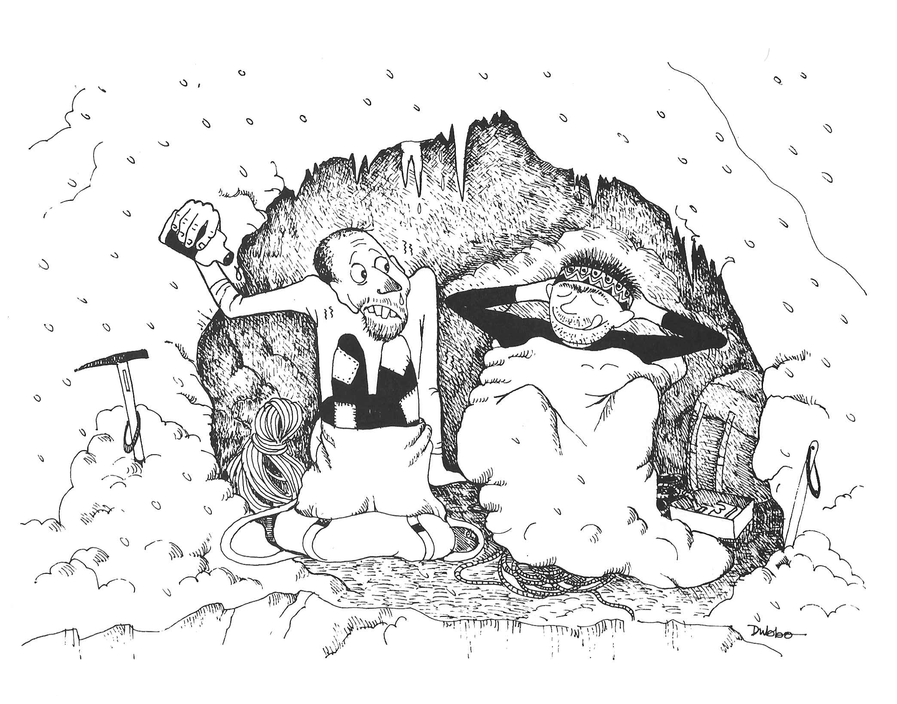

Benighted on the Ben
by Ian Barton
It was early January when six of us travelled up to Scotland. Arriving in Glencoe in the small hours, we crept into the bunkhouse at The Kingshouse and collapsed on the floor intending to make an early start. Naturally we overslept, but still managed to leave without paying, creeping past Big Ian who was watching breakfast TV in his house.
There was the usual chaotic sort out of gear at the golf course before beginning the slog up to the CIC hut. Inevitably I put my boot through the frozen crust of peat at the start of the path which, resulting in a cold wet foot. It had been a cold, clear night with a fine dawn but a storm was forecast later in the day. I walked quickly up the coire and on reaching the hut, I collapsed outside and waited for Andy to catch up. Fortunately he was even more unfit than me and I was well rested by the time arrived. As soon as Andy reached the hut it started to cloud over and flakes of snow began to fall. After some discussion we decided to go for Glover’s Chimney . Neither of us had done it before and it was a relatively short route, albeit with the crux at the top which we hoped to climb before the weather really closed in. We geared up next to the hut on the pretence that gear you are wearing always weighs less than gear carried in your ruck sack.
It had been freezing hard for a couple of weeks but there had been no thaw consequently, the way up into Coire na Ciste was a wallow in deep powder. This was Andy’s first winter route since our trip last year another epic in Crowberry’s Left Fork and he was feeling the strain. Despite numerous pleas to be allowed to go down on the pretext that he was totally knackered, I finally cajoled and persuaded him to the bottom of the route where he promptly collapsed into a mini bergschrund.
I uncoiled the ropes and stuffed Mars bars into his mouth in an attempt to revive him. My observation that, although we had not yet started climbing, we now were almost at the summit and so could not possibly go back to the hut, was not too well received!
Leaving Andy to sort out the ropes I wallowed over the bergschrund and managed to get myself established on the first pitch. The ice was very brittle and I despatched a few dinner plates down the hill to keep Andy awake. Confident that this first ice fall was only about a hundred feet long I was puzzled when I ran out of rope about thirty feet from the top and was forced to belay on a couple of poor ice screws. By this time Andy had recovered a little and made short work of seconding this pitch.
The next few hundred feet looked straightforward but devoid of belays, so I asked Andy to start climbing as soon as the rope went tight. The weather had closed in and there was a constant stream of spindrift pouring down on us as we climbed. At the top of the easy section I went too far left and had to teeter back across a rib of rock to regain the gully.
Eventually I arrived below the final chimney and began to look for a belay. After spending some time searching for a peggable crack without success, I noticed a peg sprouting from the gully wall right next to me and hurriedly tied on. I had just managed to arrange the Sticht Plate when Andy arrived. “That was a very long pitch,” he said. “Yes,” I replied, “about three hundred feet I had to stretch the ropes a bit! We’ve only got to get up this little chimney and then we are at Tower Gap.”
The crux chimney proved deceptively awkward, not helped by a lack of ice where it mattered most. I spoilt the illusion that I was confident and in control by performing an energetic mantleshelf to get onto Tower Gap and then falling down the far side. Luckily the rope drag stopped me after only a few feet.
Andy used his secret weapon, the Alpenstock, to overcome the crux. Not possessing any axes of his own, the only ones he had been able to borrow were a couple of very long walking axes. These actually proved ideal for the route enabling him to reach right past the crux and plant them firmly in the good ice at Tower Gap.
“Can’t see what all the fuss was about. Why didn’t you just reach up to the good ice on the top?” It was by now almost dark and speed was essential. I set off up the rest of Tower Ridge in a hurry, impressing on Andy the awful consequences of a slip into the unseen void from the ridge. However, there were no further technical difficulties and we reached the top of Tower Ridge just as it got completely dark. “It’s OK,” I said. “I’ve got all the compass bearings written down in the front of the guidebook. If we go to the summit we can go down the tourist track from there.”
Setting off on the correct bearing, we counted the paces but failed to find the summit. Retracing our steps on a back bearing, we then failed to find the top of Tower Ridge again and so were totally lost.
“Oh well, never mind, if we just keep going heading west we should get down to the col eventually.” We felt our way along the summit plateau but eventually ran into steep ground. Mindful of an accident to a couple of friends the previous week in similar conditions, we decided to bivvy. “Let’s just dig a ledge by this boulder and sit it out till morning.” “What do you mean, you’ve forgotten your bivvy bag? Oh well, if I empty my sack into yours you can use that, it’s got a bivvy extension.”
Some time later, after everything was sorted out, we settled down and ate the last remaining chocolate. “Your rucksack doesn’t meet the bottom of my cag and the spindrift is blowing up my shirt,” complained Andy. “It’s incredibly boring sitting here.” “I’ve just found my hip flask and it’s half full of Grouse.” A drunken couple of hours passed by as the contents of the hip flask were consumed. “What time is it?” I asked. “About seven o’clock.” “Oh good, it will be light in a few minutes.” “No, it’s seven in the evening!”
At this point I threw a wobbler and declared that I was not going to sit there for another twelve hours freezing to death. Andy was also extremely cold and readily agreed to another attempt at descending. We repacked all the gear and after a short conference, huddled round the map, decided to set off on a bearing of due south.
Staggering along by the light of the head torch, we remained roped up in the best tradition, ensuring that we would both die should one of us slip. After what seemed like hours stumbling downhill we finally dropped below the cloud to see that we had emerged at one end of Glen Nevis the wrong end!
Some time later we reached the road and we were not looking forward to the five mile trudge back to Fort William. However, luck was with us and two farmers in a Land Rover offered us a lift. They claimed to have been driving along the glen shining a searchlight up and down it to try and spot a fox which had been molesting sheep. They were armed with a rifle to dispatch the animal but it had proved too cunning and remained hidden. They left us at the Nevis Bank Hotel where we had arranged to meet the others. Inevitably there was no sign of them but after we had drunk a couple of pints the barmaid came over.
“Are you two supposed to be meeting someone here?” We replied that we were indeed. “Oh good, they’ve left this note for you.” Unfolding the note we read the following: “If you aren’t dead please can you go to the Police Station and tell them. We have gone to the Red Squirrel in Glencoe.”
Trudging round to the Police Station we informed the policeman on duty that we were still alive despite appearances to the contrary and asked for directions to the chip shop. Failure to get a lift to Glencoe at midnight forced us to pay for a taxi and we arrived at the Red Squirrel somewhat dispirited and tired.
The others were pleased to see us and we were made to relate our story.
“Did you tell them at the Police Station that you were back safely?”
I replied in the affirmative.
“When we went to report you missing they were really good to us and made us all cups of tea!”
There’s no justice.

Figure 1: Benighted on the Ben